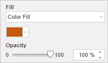
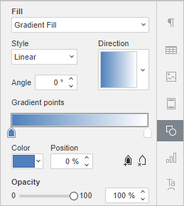
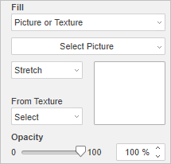
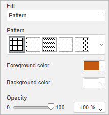

Popunjavanje objekata i izbor boja
U Uređivaču prezentacija možete primeniti različite vrste popune za slajd, automatski oblik i pozadinu fonta Tekstualne umetnosti.
- Izaberite objekat
- Da biste promenili popunu pozadine slajda, izaberite potrebne slajdove u listi slajdova. Kartica Podešavanja slajda biće aktivirana na desnoj bočnoj traci.
- Da biste promenili popunu automatskog oblika, kliknite levim tasterom miša na željeni automatski oblik. Kartica Podešavanja oblika biće aktivirana na desnoj bočnoj traci.
- Da biste promenili popunu fonta Tekstualne umetnosti, kliknite levim tasterom miša na željeni tekstualni objekat. Kartica Podešavanja Tekstualne umetnosti biće aktivirana na desnoj bočnoj traci.
- Podesite potrebnu vrstu popune
- Podesite svojstva izabrane popune (pogledajte detaljan opis ispod za svaku vrstu popune)
Za automatske oblike i font Tekstualne umetnosti, bez obzira na izabranu vrstu popune, možete podesiti i nivo Neprozirnosti povlačenjem klizača ili ručnim unosom procentualne vrednosti. Podrazumevana vrednost je 100%. Ona odgovara punoj neprozirnosti. Vrednost 0% odgovara potpunoj providnosti.
Dostupne su sledeće vrste popune:
- Popuna bojom – izaberite ovu opciju da biste odredili punu boju za popunjavanje unutrašnjeg prostora izabranog oblika/slajda.

Kliknite na obojeno polje ispod i izaberite potrebnu boju iz dostupnih setova boja ili odredite bilo koju boju po želji:

- Boje teme – boje koje odgovaraju izabranoj temi/šemi boja prezentacije. Kada primenite drugu temu ili šemu boja, skup Boje teme će se promeniti.
- Standardne boje – podrazumevani skup boja.
-
Takođe možete primeniti prilagođenu boju koristeći dve različite opcije:
- Pipeta – koristite ovu opciju da biste izabrali potrebnu boju klikom na nju u prezentaciji.
-
Više boja – kliknite na ovaj natpis ako potrebna boja ne postoji među dostupnim paletama. Izaberite potreban raspon boja pomeranjem vertikalnog klizača boja i podesite konkretnu boju povlačenjem birača boja unutar velikog kvadratnog polja za boje. Kada izaberete boju pomoću birača boja, odgovarajuće RGB i sRGB vrednosti boja biće prikazane u poljima sa desne strane. Takođe možete definisati boju na osnovu RGB modela boja unosom odgovarajućih numeričkih vrednosti u polja R, G, B (crvena, zelena, plava) ili unosom sRGB heksadecimalnog koda u polje označeno znakom #. Izabrana boja se prikazuje u polju za pregled Novo. Ako je objekat prethodno bio popunjen nekom prilagođenom bojom, ta boja će biti prikazana u polju Trenutno kako biste mogli da uporedite originalnu i izmenjenu boju. Kada je boja definisana, kliknite na dugme Dodaj:

Prilagođena boja će biti primenjena na izabrani element i dodata u paletu Nedavne boje.
Iste vrste boja možete koristiti i prilikom izbora boje linije automatskog oblika, podešavanja boje fonta ili promene pozadine ili boje ivice tabele.
-
Gradijentna popuna – izaberite ovu opciju da biste popunili slajd/oblik sa dve boje koje se postepeno prelaze jedna u drugu. Kliknite na ikonu Podešavanja oblika da biste otvorili meni Popuna:

- Stil – izaberite jednu od dostupnih opcija: Linearni (boje se menjaju u pravoj liniji, tj. duž horizontalne/vertikalne ose ili dijagonalno pod uglom od 45 stepeni) ili Radijalni (boje se menjaju kružno od centra ka ivicama).
- Smer – prozor za pregled smera prikazuje izabranu gradijentnu boju, kliknite na strelicu da biste izabrali šablon iz menija. Ako je izabran Linearni gradijent, dostupni su sledeći smerovi: od gore-levo ka dole-desno, od gore ka dole, od gore-desno ka dole-levo, s desna na levo, od dole-desno ka gore-levo, od dole ka gore, od dole-levo ka gore-desno, s leva na desno. Ako je izabran Radijalni gradijent, dostupan je samo jedan šablon.
- Ugao – postavite numeričku vrednost za precizan ugao prelaza boja.
- Gradijentne tačke su specifične tačke prelaza boja.
- Koristite dugme Dodaj gradijentnu tačku ili klizač da biste dodali gradijentnu tačku, a dugme Ukloni gradijentnu tačku da biste je obrisali. Možete dodati do 10 gradijentnih tačaka. Svaka sledeća dodata gradijentna tačka ne utiče na trenutni izgled gradijenta.
- Koristite klizač da biste promenili položaj gradijentne tačke ili odredite Poziciju u procentima za precizno pozicioniranje.
- Da biste primenili boju na gradijentnu tačku, kliknite na željenu tačku na klizaču, a zatim kliknite na Boja da biste izabrali željenu boju.
- Slika ili tekstura – izaberite ovu opciju da biste koristili sliku ili unapred definisanu teksturu kao pozadinu oblika/slajda.

- Ako želite da koristite sliku kao pozadinu oblika/slajda, kliknite na dugme Izaberi sliku i dodajte sliku Iz datoteke birajući je sa čvrstog diska računara, Sa URL-a unošenjem odgovarajuće URL adrese u otvoreni prozor ili Iz skladišta izborom potrebne slike sačuvane na vašem portalu.
- Ako želite da koristite teksturu kao pozadinu oblika/slajda, otvorite padajući meni Iz teksture i izaberite željeni unapred definisani uzorak teksture.
Trenutno su dostupne sledeće teksture: Platno, Karton, Tamna tkanina, Zrno, Granit, Sivi papir, Pleteno, Koža, Braon papir, Papirus, Drvo.
- U slučaju da izabrana Slika ima manje ili veće dimenzije od automatskog oblika ili slajda, možete izabrati podešavanje Razvuci ili Poploči iz padajuće liste.
Opcija Razvuci omogućava prilagođavanje veličine slike kako bi odgovarala veličini slajda ili automatskog oblika tako da potpuno popuni prostor.
Opcija Poploči omogućava prikaz samo dela veće slike uz zadržavanje njenih originalnih dimenzija ili ponavljanje manje slike uz zadržavanje njenih originalnih dimenzija preko površine slajda ili automatskog oblika kako bi se prostor potpuno popunio.
Svaki izabrani unapred definisani Uzorak teksture potpuno popunjava prostor, ali po potrebi možete primeniti efekat Razvuci.
- Šablon – izaberite ovu opciju da biste popunili slajd/oblik dvobojnim dizajnom sastavljenim od pravilno ponavljanih elemenata.

- Šablon – izaberite jedan od unapred definisanih dizajna iz menija.
- Boja prvog plana – kliknite na ovo polje boje da biste promenili boju elemenata šablona.
- Boja pozadine – kliknite na ovo polje boje da biste promenili boju pozadine šablona.
- Bez popune – izaberite ovu opciju ako ne želite da koristite popunu.